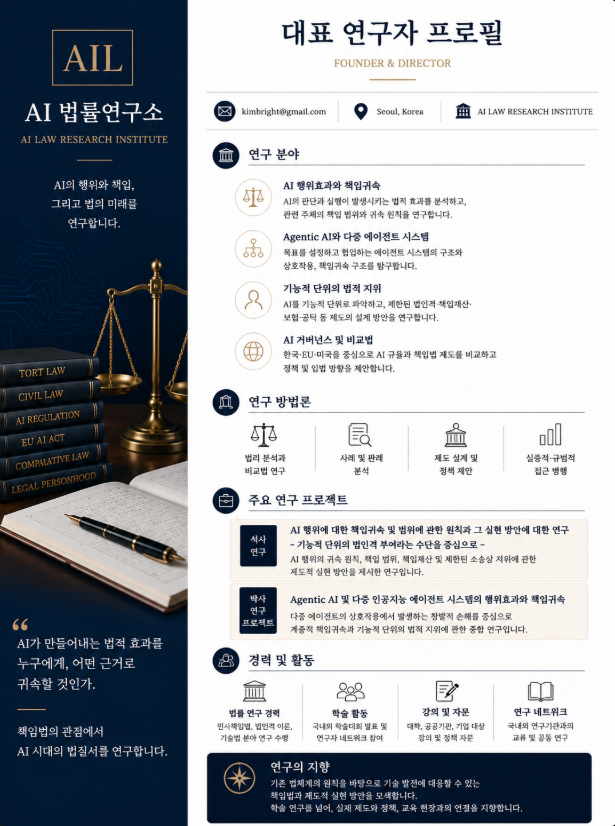

AI 민사책임
기술적 인과과정과 자연인·법인에 대한 규범적 책임귀속을 구별합니다.
AI LIABILITY LAW · AGENTIC AI · MULTI-AGENT SYSTEMS
인공지능의 기술적 작동과 법적 책임 사이의 연결구조를 연구합니다. 생성형 인공지능을 넘어 에이전틱 AI와 다중 인공지능 에이전트 시스템으로 연구범위를 확장하여, 모델·에이전트·오케스트레이터·외부도구와 인간 및 조직의 권한·통제·정보지배가 손해발생과 민사책임의 귀속에 미치는 영향을 분석합니다.
01 · RESEARCH MISSION
AI 자체를 추상적 책임주체로 전제하지 않고 실제 시스템의 작동과 인간·조직의 권한·통제·정보지배를 현행 책임요건과 연결합니다.
기술적 인과과정과 자연인·법인에 대한 규범적 책임귀속을 구별합니다.
목표설정·도구사용·에이전트 호출·오케스트레이션과 분산된 권한구조를 연구합니다.
버전·메시지·도구호출·승인·로그의 보유와 지배를 책임 및 내부구상과 연결합니다.
보험·기금·책임재산 등 비법인격적 수단을 우선 검증한 뒤 제한적 법적 지위를 검토합니다.
02 · RESEARCH AXES
기술·실체법·절차법·거버넌스를 하나의 책임귀속 문제 안에서 교차 검토합니다.
의사표시·자동결정·사실행위·물리적 작동의 법적 효과와 귀속근거를 분리해 분석합니다.
목표설정·재계획·도구사용에서 권한초과, 예견가능성, 감독가능성과 내부통제를 연구합니다.
복수 에이전트의 협업·경쟁·조정이 위험형성에 기여한 범위와 관여자별 책임을 검토합니다.
로그보존, 문서제출, 인과관계 증명과 정보비대칭에 따른 증명위험을 분석합니다.
소프트웨어·하드웨어·업데이트·통합서비스의 결함과 과실이 경합하는 경우를 분석합니다.
현행법과 피해회복수단으로 해결되지 않는 잔여영역에서 제한적 법적 지위의 필요성과 한계를 검증합니다.
대한민국·EU·미국 등 역할별 규율과 증거·감독·책임구조의 기능을 비교합니다.
위험등급, 인간감독, 보험, 공탁, 책임관리와 특별입법의 필요성을 검토합니다.
03 · RESEARCH CONTINUITY
책임주체를 먼저 상정하는 접근에서 손해 관련 작동과 통제구조를 먼저 복원하는 접근으로 연구를 확장합니다.
AI의 사실적 인과기여와 자연인·법인에 대한 규범적 책임귀속 사이의 간극을 검토하고, 기존 책임주체의 책임을 대체하지 않는 범위에서 기능적 단위의 제한된 법적 효과를 연구했습니다.
손해 관련 작동범위를 식별하고 설계·통합·배치·운용 주체의 위험창출·통제·예방가능성·인과기여·정보지배를 현행 민사책임과 연결합니다. 제한적 법적 지위는 잔여영역에서만 검증합니다.
04 · DOCTORAL RESEARCH PROJECT
분석범위와 법적 책임주체를 구별하고 현행법·증거·피해회복수단을 순차 검증하는 연구입니다.
복수 에이전트 상호작용의 분석범위와 설계·통합·배치·운용 주체 사이의 책임배분을 중심으로
목표·추론·메모리·도구사용·승인·실행의 권한이 여러 인간과 조직에 분산되는 구조를 분석합니다.
배치 인스턴스는 사실조사의 출발점일 수 있으나 그 자체를 법적 책임주체로 선결하지 않습니다.
손해 관련 작동범위를 어떻게 식별하고 위험·통제·인과기여·정보지배를 책임요건과 연결할 것인지 검토합니다.
역할명보다 실제 위험창출, 변경·중단권한, 예방가능성, 인과기여와 로그 지배를 기준으로 판단합니다.
비계약적 민사손해, 제조물책임, 증명위험과 피해회복수단을 중심범위로 고정합니다.
현행 책임법과 증거규칙 → 보험·기금·책임재산 → 필요한 경우에만 제한적 법적 지위를 검토합니다.
05 · 8-STAGE LIABILITY ANALYSIS MODEL
기술적 사건연쇄를 바로 법적 책임으로 단정하지 않고 사실·현행법·증명·피해회복을 단계적으로 검증합니다.
버전·메시지·메모리·도구호출·권한변경·인간개입을 시간순으로 복원합니다.
손해설명의 충분성과 상호작용·통제구조에 따라 분석범위를 축소·확대합니다.
단일 결함, 누적 원인, 가해자 불명, 조직과실, 기록부족과 상호작용 기여를 구분합니다.
과실·사용자책임·공동불법행위·법인책임·제조물책임을 우선 검토합니다.
로그 지배와 보존의무, 문서제출, 자유심증, 증명방해와 법정 추정을 검토합니다.
피해자에 대한 책임과 관여자 사이의 내부 구상·최종부담을 구별합니다.
보험·직접청구·기금·법인·SPV·분리계정·공탁의 충분성을 먼저 검증합니다.
앞 단계로도 구조적 공백이 남는 경우에만 특별입법의 필요성과 법적 효과를 검토합니다.
06 · RESEARCH LINKAGE
연구질문과 분석모형, 법리·판례 축적, 사례 적용과 결과물 생산을 하나의 순환구조로 운영합니다.
박사연구의 질문·범위·책임배분 기준과 8단계 분석모형을 설정합니다.
현행법·판례·학설·비교법·공개사례와 증거구조를 주제별로 축적합니다.
대표사례와 반례에 동일 기준을 반복 적용하여 자의적 확대·축소를 점검합니다.
검증 결과를 학술논문, 발표, 연구자료와 최종 학위논문의 논증으로 전환합니다.
07 · 24-MONTH RESEARCH ROADMAP
연구계획서의 4학기 수행계획을 기준으로 연구목표, 핵심 수행내용과 단계별 산출물을 구체화했습니다.
연구질문·핵심용어·자료수집 기준을 확정하고 Agentic AI·다중 에이전트·물리적 실행계층의 기능구조를 정리합니다.
연구질문·잠정명제 확정본, 용어대장, 선행연구·법제 목록, 사례선정 기준, 전체 논증 아웃라인, 제1·2장 초고
현행 민사책임법·제조물책임과 증명위험을 청구원인별로 분석하고 국내외 역할별 의무와 증거구조를 비교합니다.
제3·4·5장 초고, 대표사례·반례 적용기록, 사실관계·증거지도, 첫 학술논문 투고원고
설계·통합·배치·운용 주체 사이의 대외책임과 내부 구상을 구성하고 피해회복 및 법적 지위 대안을 동일 기준으로 비교합니다.
제6·7장 초고, 대안별 필요성 검증서, 법적 지위 필요·불필요 반례분석, 입법요소 초안
전체 논증을 통합하고 대표사례와 반례에 8단계 분석모형을 재적용하여 연구결론의 일관성과 반증가능성을 최종 점검합니다.
전 장 통합본, 연구결과 발표자료, 두 번째 학술논문 투고원고, 심사·제출용 최종논문
08 · RESEARCH OUTPUTS
완료된 성과, 연구과정에서 축적할 자료, 향후 투고·발표 예정 산출물을 구분하여 관리합니다.
석사연구 AI 행위의 책임귀속과 기능적 단위의 법적 지위 문제를 검토한 학위논문을 연구의 출발점으로 둡니다.
박사연구 Agentic AI·Multi-Agent Systems의 작동범위와 설계·통합·배치·운용 주체의 책임배분으로 확장합니다.
용어대장, 선행연구·법제 목록, 사례선정 기준, 사실관계·증거지도, 대표사례·반례 적용기록을 축적합니다.
각 자료는 중심명제·근거·법적 권위·적용범위·반론·한계와 연결하여 관리합니다.
제2학기에는 현행 민사책임·제조물책임·증명위험을 중심으로 첫 학술논문 투고원고를 작성합니다.
제4학기에는 통합모형의 대표사례·반례 적용결과를 반영한 두 번째 투고원고와 연구결과 발표자료를 작성합니다.
보험·직접청구·책임기금·SPV·분리계정·공탁과 제한적 법적 지위를 동일한 평가기준으로 비교한 필요성 검증서를 구축합니다.
검증된 결과는 연구노트, 발표자료, 입법요소 초안과 출판·공개자료로 단계적으로 전환합니다.

FOUNDER & DIRECTOR
이명훈
AI 책임법을 중심으로 인공지능의 행위효과와 책임귀속, 에이전틱 AI와 다중 인공지능 에이전트 시스템의 민사책임, 증명위험과 피해회복 제도를 연구합니다.
주요 연구AI 민사책임 · Agentic AI · Multi-Agent Systems · 제조물책임 · 증명위험 · 책임재산·법적 지위
연구 방법법해석학 · 판례·사례 분석 · 비교법 · 기술구조 분석 · 정책·입법 설계
연구 방향분석범위와 법적 책임주체를 구별하고 현행법에서 제도대안까지 순차 검증
09 · RESEARCH STANDARD
법령·판례·가이드라인은 가능한 한 공식 원문을 기준으로 확인하고 시행일과 기준일을 구분합니다.
법령·판례·학설·기술용어·연구상 작업개념을 구별하고, 현행법 해석과 새로운 추정규정·위험책임·법적 지위에 관한 입법론을 혼동하지 않습니다.
본 사이트의 내용은 연구·교육 목적의 일반 정보이며 개별 사건에 대한 법률자문을 제공하지 않습니다.